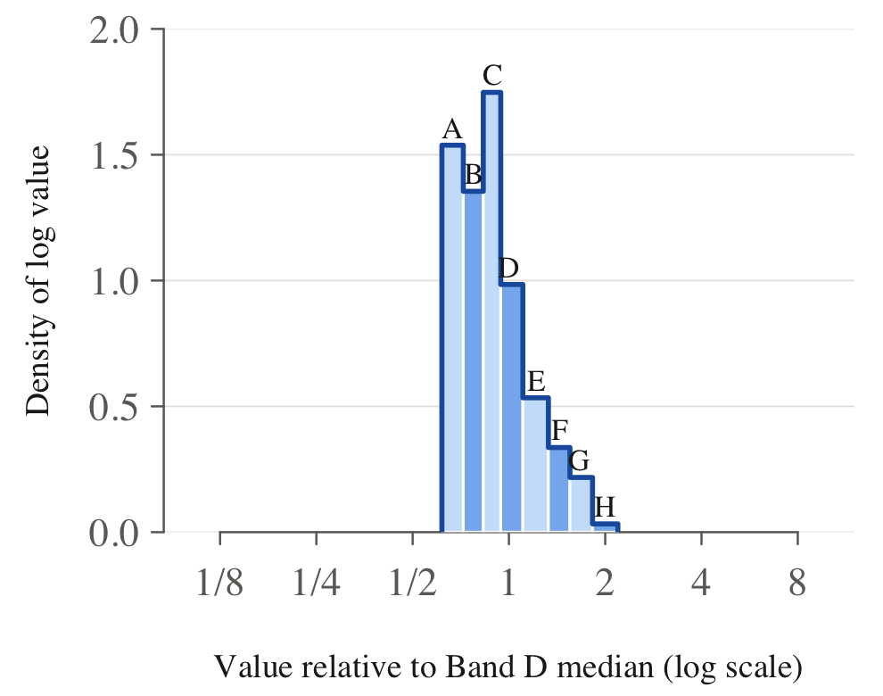

How homes are distributed across bands
1991 valuation thresholds and statutory proportions
| Band | 1991 value (GBP) | Band D ratio |
|---|
01 / COUNCIL TAX ATLAS
A dwelling’s 1991 value determines its band. The council sets the local Band D charge. Together, they determine the standard annual bill.
Start with the bill↓Read the working paper ↗The valuation date behind
England’s current bands.
TWO CHOICES SHAPE THE TAX
England’s Council Tax places homes in eight bands based on their estimated value on 1 April 1991. A fixed national schedule then sets each band’s charge relative to Band D. These are separate design choices: revaluation changes assignments; new multipliers change the relative charges.
01 / THE CURRENT SYSTEM
A dwelling’s band determines the proportion.
The local authority sets the annual Band D charge.
| Band | 1991 value (GBP) | Band D ratio |
|---|
England’s published reference series, nominal GBP by fiscal start year. Choose a local authority above to see its Band D history alongside. Predecessor-authority series are not spliced together.
02 / WHY THE CHARGES ARE COMPRESSED
The actual and implied panels use the same official band-stock weights. The implied panel places each band at its statutory proportion of the Band D charge.


The 1991 panel reconstructs values from April-1993 band-stock counts. Later panels use the national main-model sample in the selected year, exclude prices strictly below that year’s type-7 0.5th percentile and retain cutoff ties and the entire upper tail. The 2025 figure retains 558,489 transactions.
Within-band densities use each band’s share of the English dwelling stock at 31 March of that year. Stock weighting adjusts band composition; it does not remove selection within bands. The figure’s low-price filter is separate from the untrimmed model samples and the tax sample’s upper-ETR filter.
Download distribution summary ↓ · Band medians and stock weights ↓
03 / THE VALUATION DATE
For each year and sample, regress log sale price on band indicators. These annual descriptive regressions are separate from the full hedonic models.
England-wide annual band-only R², 1995–2025. Each year uses the full England sample, with no geographic subgroups.
EPC models with original and additional controls use identical complete-case transactions, so their raw band-only R² is identical. The full-model fits and conditional gaps can differ. Lines describe changing annual transaction samples, rather than a balanced panel of all dwellings.
Loading saved model results…
03 / COMPARE SIMILAR PROPERTIES
Compare properties after controlling for the stated housing characteristics, continuous time and postcode-district location. A positive H–G gap means Band H properties sell for more than otherwise comparable Band G properties in the model.
Shading shows pointwise 95% intervals conditional on estimated smoothing parameters. Cross-sample differences are descriptive comparisons; overlapping or separated intervals do not substitute for a test of the difference. These are conditional price associations, not causal effects of a band assignment.
04 / MARKET CONTEXT
Standard deviation of residual log prices from the model without bands. The dispersion can remain large even when conditional band means are ordered.


05 / CHECK THE FINDINGS
The current price models use a temporal basis dimension of 20 and the retained spatial basis. Both band specifications use the same observations within each group. Urban and rural add four specifications to the twelve-model baseline.
| Group | Transactions | Years | First R² (%) | 2025 R² (%) | R² trend (NW SE) pp/year | Mid-2025 H–G log points [95% interval] |
|---|---|---|---|---|---|---|
| England | 22,680,611 | 1995–2025 | 74.03 | 69.76 | -0.204 (0.048) | 0.703 [0.689, 0.718] |
| London | 2,353,902 | 1995–2025 | 70.57 | 64.20 | -0.324 (0.093) | 0.726 [0.705, 0.747] |
| Rest of England | 20,326,709 | 1995–2025 | 73.24 | 68.38 | -0.195 (0.053) | 0.640 [0.621, 0.660] |
| EPC · original controls | 2,491,135 | 2013–2025 | 78.52 | 71.96 | -0.280 (0.111) | 0.715 [0.689, 0.741] |
| EPC · additional controls | 2,491,135 | 2013–2025 | 78.52 | 71.96 | -0.280 (0.111) | 0.528 [0.504, 0.551] |
| Repeat-sales sample | 3,703,214 | 1995–2025 | 74.96 | 69.71 | -0.247 (0.044) | 0.571 [0.539, 0.603] |
| Urban | 19,163,234 | 1995–2025 | 73.74 | 69.84 | -0.198 (0.051) | 0.719 [0.703, 0.735] |
| Rural | 3,517,377 | 1995–2025 | 74.29 | 69.88 | -0.165 (0.036) | 0.624 [0.591, 0.657] |
Annual R² is the raw band-only measure. Trend standard errors use the saved Newey–West estimates. Groups with different first years do not share a common trend window. An EPC common sample appears twice because its housing controls differ in the fitted models.
| Group | Specification | Transactions | Adjusted R² | Deviance explained (%) |
|---|---|---|---|---|
| England | With bands | 22,680,611 | 0.895710 | 89.575 |
| England | Without bands | 22,680,611 | 0.787434 | 78.752 |
| London | With bands | 2,353,902 | 0.917126 | 91.738 |
| London | Without bands | 2,353,902 | 0.847409 | 84.788 |
| Rest of England | With bands | 20,326,709 | 0.887248 | 88.730 |
| Rest of England | Without bands | 20,326,709 | 0.772322 | 77.243 |
| EPC · original controls | With bands | 2,491,135 | 0.880633 | 88.082 |
| EPC · original controls | Without bands | 2,491,135 | 0.755984 | 75.636 |
| EPC · additional controls | With bands | 2,491,135 | 0.903238 | 90.339 |
| EPC · additional controls | Without bands | 2,491,135 | 0.858514 | 85.873 |
| Repeat-sales sample | With bands | 3,703,214 | 0.918422 | 91.862 |
| Repeat-sales sample | Without bands | 3,703,214 | 0.882083 | 88.237 |
| Urban | Without bands | 19,163,234 | 0.795956 | 79.605 |
| Urban | With bands | 19,163,234 | 0.898340 | 89.839 |
| Rural | Without bands | 3,517,377 | 0.765012 | 76.561 |
| Rural | With bands | 3,517,377 | 0.883629 | 88.392 |
These full-model adjusted R² values differ from annual band-only R². Fit across different samples is not a like-for-like measure of the effect of adding controls.
England, London and the rest of England use the original housing controls. EPC models compare original and additional housing controls on the same 2,491,135 complete cases in 2013–2025. The repeat-sales sample includes 3,703,214 transactions in properties with eligible sales both before and after 2013; later non-energy housing characteristics are held fixed. It is a restricted-sample hedonic regression, not a first-difference repeat-sales estimator.
Urban status is UN1/UF1 and rural status is RLN1/RLF1/RSN1/RSF1 in the supplied official 2021 LSOA classification. Unmatched classifications are not treated as rural; all main-model observations were classified. A postcode district may contain both urban and rural transactions. No EPC-by-urban or repeat-sales-by-rural models have been estimated for this update.
Temporal basis dimension is 20. Spatial dimension is min(300, number of model districts − 1), giving 275 in London. Basis dimensions constrain the representation; estimated penalties determine effective degrees of freedom. The urban/rural estimates use the recorded newer R/mgcv environment. No models were re-estimated to prepare this website.
MODEL DOWNLOADS & VERIFICATION
This edition reconciles the existing atlas with the current saved tax and reform exports and adds the current price-model evidence. The review checks included all 31 annual tax summaries, 24 national reform scenarios, 7,104 LAD-policy-year Suits results, and 800,886 LSOA policy-map records.
Downloads contain exported curves, coefficients and aggregate model diagnostics. Fitted model objects, row identifiers, addresses, postcodes and transaction-level input data are not supplied.
Urban/rural results: all conditional gaps ↓ · urban coefficients ↓ · rural coefficients ↓ · H–G key points ↓ · H–A/H–G key points ↓.
The refresh compares the supplied atlas with current saved numerical exports. It does not repeat the original PPD–VOA or EPC linkage and does not establish the correctness of every original match. LSOA retained counts were checked for all 31 years; historical mean ETRs were independently checked against the four exported manuscript map years. Current band-query LAD totals reconcile with policy sample counts and revenues. Uncertainty for policy differences is not estimated.
The original aggregate maps and geographic definitions remain documented in the tax and reform appendix. Urban/rural model groups do not imply that new urban/rural tax or policy subgroups have been calculated. A matching urban/rural version of the paper’s tax-sample descriptive table requires the separate historical-charge dataset and is not substituted with model-sample statistics.
METHODS & SOURCES
This appendix explains the measures, data and saved simulation assumptions behind the atlas. Open a topic below for details. The website presents the paper’s existing results and additional area-level summaries of the same saved samples.
For example, a £1,000 annual bill on a property sold for £200,000 gives an ETR of 0.5%. Monetary amounts in the atlas are nominal GBP.
| Source | Role in the atlas | Period or reference |
|---|---|---|
| HM Land Registry, Price Paid Data (PPD) | Observed sale prices, sale dates and the transaction universe used to construct the research samples. Repeated sales are separate transactions. | England, 1995–2025 |
| Collected Council Tax valuation-list records | Property-level A–H band assignments linked to transactions. The collected snapshot is not a historical record of every band change. | Retained research snapshot |
| Official local-authority Band D charge tables | Published annual reference charges and the historical fiscal-year charges assigned to transactions. | Annual series; atlas displays 1995–2025 fiscal start years |
| Official Council Tax dwelling-stock tables | England and LAD A–H stock shares, plus the fixed local stock-share targets used for rebanding. | September 2026 |
| ONS LSOA2021 boundaries and retained LAD reference polygons | Fixed display areas for national and local maps. All 33,755 English LSOAs remain visible, including areas without observed sales. | LSOA2021; LAD2025 reference geometry matched to all 296 LAD2026 result codes |
| ONS LSOA2021 to Electoral Ward2026 best-fit lookup | Recognisable ward reference names for neighbourhood labels and search. These labels do not alter analytical areas or sample membership; ward and LSOA boundaries may differ. | 7 May 2026 reference; published 15 October 2026 |
| Retained August-2026 postcode lookup | Unique LSOA-to-LAD2026 links for historical local summaries. Ambiguous links are not assigned arbitrarily. | August 2026 |
| Neighbourhood income and Census household-deprivation measures | Fixed 2021 area characteristics for the distributional reform charts. The income measure is a converted GDP-based area proxy; the per-capita denominator is not fully traced. Deprivation counts Census household deprivation dimensions and is not IMD. | 2021 characteristics |
| Saved paper outputs and six-policy transaction simulations | National and local Suits indices, reform liabilities and comparisons. New website tables aggregate these saved outputs without re-estimating models or changing policy rules. | Reforms: 2022–2025 |
The paper also uses EPC and other housing characteristics in its hedonic analysis. Website tax burdens and reforms use observed sale prices, not predicted prices from those models. Boundary data contain public sector information licensed under the Open Government Licence v3.0.
Sample selection. Each calendar year uses the matched tax sample after excluding only observations strictly above the current-system annual 99.5th ETR percentile. Observations equal to the cutoff and the entire lower tail remain. There is no additional price trimming, winsorisation or policy-specific selection. All six reforms use the same selected observations within each year; no observations are removed because of their simulated tax rate.
Selected reform samples: 2022: 654,649.0; 2023: 525,266.0; 2024: 485,756.0; 2025: 565,375.0. The paper’s untrimmed hedonic sample is a separate analytical sample.
Time. Historical maps group transactions by calendar sale year. Each transaction’s assigned annual liability follows its matched historical fiscal-year charge. A calendar-year mean bill may therefore include liabilities from two fiscal years. The published Band D line chart is indexed by fiscal start year.
LSOA. Neighbourhood results use fixed LSOA2021 boundaries. Their averages describe properties transacting in that year, not all homes or all residents.
LAD. Policy results use the exact saved LAD2026 simulation groups. Historical LAD Explorer means conservatively aggregate LSOAs with a unique official link to a LAD2026 area. There are 33,709 uniquely linked English LSOAs; 46 remain unresolved or ambiguous. In 2025, 559 transactions are excluded from those historical LAD summaries but remain in national and individual-LSOA results. Historical and exact policy LAD means may consequently differ slightly.
Recognisable place names. Labels such as “Beam ward · Barking and Dagenham 020D” combine an ONS 2026 best-fit ward name with the original official LSOA name. Ward names help recognition and search; they are not a renaming of the statistical unit and do not imply matching boundaries. This fixed reference label applies across the atlas’s years. Source: ONS best-fit lookup.
Band shares. “Official 2026 stock” is a fixed dwelling-stock snapshot; it does not change with the year selector. “Selected annual transactions” changes by sale year and counts repeated sales separately. It is not a historical stock estimate. Official LSOA stock shares are not supplied in this atlas.
Missing charges, missing band groups and areas without observations stay missing. A current LAD code’s unavailable early Band D values are not filled by guessing predecessor-authority charges. In the LSOA Explorer, a displayed published Band D series refers to its uniquely linked current LAD, rather than asserting one historical charge route for every neighbourhood transaction.
CONTINUE EXPLORING
See how annual liabilities compare with current property values, nationally and in your area.